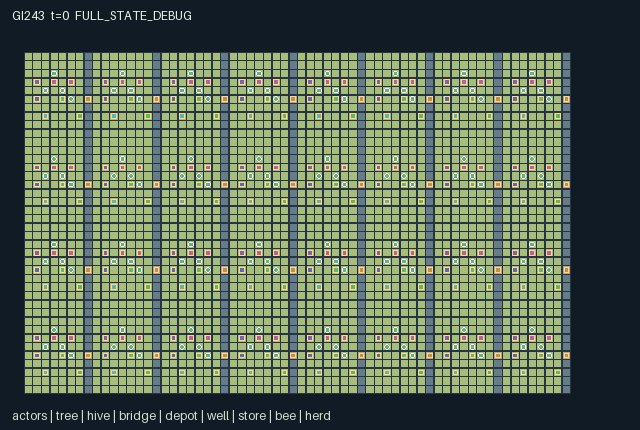

GI243 / SPATIAL
Mountain Orchard Neighbours
Release verification episode
Untrained uniform legal actions. Actual JAX state sampled along the full original episode; full-state debug camera. No human performance or learning claim.

Run this game
crucibles play --game 243
Start Python locally, then open the address printed by the terminal. Installation, multiplayer, takeover and keyboard controls →
Objective, rewards & ending
Exact task contract
{
"objective": "Deliver 64 orchard fruit cargos while maintaining cross-household pollination, water, shared hives and footbridges before H=896.",
"natural_termination": "Natural completion at 64 delivered fruit cargos; otherwise horizon truncation at 896.",
"interaction": "Compatible nearby trees exchange pollen through a two-step wind queue only with live nearby pollinators. Spray protects local fruit growth but suppresses neighboring pollen and hive health. Hive care and bridge repair require complementary actors. Water, compost, hives and tools can be physically moved between households.",
"observation_access": "Only own prefix and radius-two Chebyshev 5x5 patch with exact listed channels enter the policy. Visible actor identity, role, crew, tools, cargo, stamina and message are in the patch. Each object attribute is in its group channels. Hidden cells and entities remain hidden; global debugger must be labeled. Clock alone is public."
}Declared per-step reward bounds: -8.0 to 8.0. Observability: partially_observable.
Rules
- Thirty-two households each provide four independently controllable people. Bees and herds are environmental entities.
- Flowering compatible trees send wind pollen through a two-step queue. A healthy local hive and nearby visible bee are required.
- Spray removes local pests but poisons neighboring trees and hurts nearby hives. Compost and carried water support delayed growth.
- Hive care needs a beekeeper plus a partner shading the same hive. A beekeeper can carry a hive as a backpack to another terrace.
- Bridge repair needs a mason with material and a nearby bracing partner. Erosion closes neglected crossings.
- Harvest fruit and deliver it to village stores; quality travels with the carried cargo. Native human interaction remains unverified.
Original mechanism document (historical status wording retained)
# Mountain Orchard Neighbours Status: AUTHORED_NOT_EXECUTED. All gameplay, scripts and causal predictions below are source-derived author hypotheses, not measured results. ## Orchard ecology and embodied work Thirty-two four-person households occupy connected terraces in a 64 by 40 map. Each has two compatible tree species, a movable hive, bridge, supply depot, water basin, store, pollinator swarm and roaming herd animal. Actors begin with gardener compost, steward water and mason materials; beekeepers begin empty. Tools 1/2/3/4 enable pruning/shading, hive work, herding/bracing and masonry. Bees and livestock have native positions and dynamics but no controllable agent rows. Pruning (6) restores a mature fruitless tree to flowering stage four. Spray (7) removes three pest units at its target but deposits persistent residue on every tree within six cells; nearby hives lose health while residue remains within five cells. Carried water (8) and compost (9) change local moisture and growth. Supply pickup (5) gives one mason kit to a tool-4 actor or compost to others. Basin pickup (17) creates a carried water unit. Empty trees can be replanted with compost (22). Rain arrives every 24 ticks and bridge erosion/wind changes every 32; seasonal time is encoded by the native clock, without external weather data. Wind transport requires a flowering unpoisoned source, a healthy hive within five cells and a live swarm within one cell. Sources send pollen to the opposite species downwind within eight horizontal cells and two vertical cells. The queue has two native delay slots: newly emitted pollen first enters pollen_next, then pollen_queue, then the receiving tree, and residue can suppress receipt. This links neighboring households instead of assigning independent crop games. Swarms physically move one cardinal cell toward a blossom class selected every eight ticks. They wait when another swarm occupies the destination, and lower swarm index resolves simultaneous empty-cell claims, keeping their observed entity attributes distinct. Their native target is chosen near their hive, so transporting that hive changes ecology. Hives require a tool-2 caregiver (11), a different tool-1 shading actor (12), and nectar to gain two health. One actor cannot provide both simultaneous actions. A beekeeper can lift a hive (15) as a backpack, move it, and set it down (16); this backpack is separate from ordinary cargo. Hive cells block normal entry to avoid overlap. Nectar regenerates near mature trees every sixteen ticks. Health and care costs are tied to the real hive, not an independent reward token. Bridges need a tool-4 mason spending material (13) and a different tool-3 bracing actor (14) to gain two integrity. Zero integrity closes the actual ravine crossing. Roaming herds damage seedlings only when their actual old position is within one cell; guiding (18) with a tool-3 actor prevents that herd's damage this tick and moves it to a refuge. Animals do not act as extra policies. Wet trees gain maturity every fourth tick. Pests and trampling can reduce it. At maturity at least six with received pollen, a tree creates one fruit and returns to stage two, consuming its accumulated pollen. Harvest (10) loads a fruit; delivery (19) physically transfers it to a village store. Cargo handoff (21) preserves the carried quality code and tool exchange (20) is reciprocal. The current simplified quality code is the observed pollen at harvest, with a minimum of one; it is not a persistent biochemical property of each fruit. ## Incentives and alternatives Households can keep shared pollination healthy, relocate a hive, or spray for immediate local pest protection despite harm to others. Water/compost labor competes with bridge maintenance, herd management and delivery. A bridge repair requires complementary staffing; hives can make distant households more or less productive after travel and pollen delays. These mechanisms have not been evaluated for optimal strategies or learning. Each nonrest action costs 0.01. Spray costs another 0.03; compost, successful repair and planting another 0.02. Pruning and spraying each consume an extra stamina unit. A fruit sale pays its actor 1 plus 0.1 times its carried quality code, and each resident of the receiving store's household 0.04. Paired hive care pays that hive household 0.01 per resident; poisoned hives cost their household residents 0.02 each step. Sixty-four total delivered fruit cargos ends naturally; otherwise H=896 truncates. ## Literal diagnostics Script one moves gardener 0 south three times to shade hive 0 while beekeeper 1 cares, then rests. Script two sprays the nearby tree and follows the residue with idle steps. The paired intervention repeats the approach, then changes only gardener 0's shade action versus rest while beekeeper 1 cares; identical suffixes test intended shared hive-health/nectar consequences. All are unexecuted source hypotheses. ## Native boundary and local information Every listed actor is an independently selectable row of the same int32 action vector. Human or AI control uses that unchanged row; a frontend, keyboard binding, animation, camera, agent-keyed adapter and human usability have not been implemented or verified by this author. All actors remain active. Rest restores one stamina unit; exertion consumes one, with documented game-specific additions. Movement is cardinal; destinations occupied at the start of a step cannot be entered. Simultaneous claims for an empty destination favor the lowest actor index. Spatial interactions use start-of-step positions and Manhattan distance at most one to the nearest relevant object, unless a specific rule says otherwise. Tool exchange requires both adjacent actors to choose exchange and mutually select each other. Invalid or out-of-range actions become rest deterministically. Each role receives the own-state prefix plus a 5x5 radius-two patch. The manifest lists every channel and normalization; the renderer's entity masks and map mask are derived from the same radius. Out-of-world patch cells are all -1. There is no omniscient policy feed. Agent IDs, fixed role and home crew are public metadata; current tools, cargo, stamina, messages and world attributes are visible only in the patch. Entity positions are used by movement, proximity, ecology or construction; none are layout-only proxies. A nonterminal call advances the int32 clock once. Natural completion has priority over horizon truncation. A terminal raw call preserves every state leaf, observation and terminal cause, returns zero reward and all dones true, and does not reset. All boundary/state integers are int32; the supplied uint32 key is used only through JAX randomness and is not copied into state. State keys/shapes remain fixed. Rewards declare conservative [-8,8] bounds and observations [-1,1]; these are interface ranges, not scientific performance gates. Concurrency, bounds, terminal absorption, JIT/vmap, causal effects, throughput and numerical parity remain unverified. ## Source-line evidence - candidate.py:116 'cared =': hive care requires complementary simultaneous roles - candidate.py:168 'incoming =': spatial compatible wind pollen enters delayed queue - candidate.py:131 'poison =': spray harms nearby trees beyond its source - candidate.py:118 'repaired =': bridge repair requires a separate brace action - candidate.py:127 'n["hive_pos"]': carried hive position follows a real actor - candidate.py:187 'trampled =': roaming animals alter young tree growth ## Provenance and limits The source is original for this batch and train split. Only current batch authority, four assigned design/request pairs, population/family direction, human-playability addendum and copied interface contracts/templates were read. No prior candidate, IR, result, training, heldout or memory was read; no remote query was made. Official repository references were allowed but not read or copied. The family inspiration comes solely from the supplied design direction: no commercial assets or upstream game implementation is included. PureJaxRL/Craftax baseline code is not used as a game or learner replacement. The two literal scripts and the paired single-action hypothesis in playthrough.json are unexecuted diagnostics, not a controller restriction or proof of task success. Source-authored invariants and bounds await the independent sealed validator. No candidate import, Python candidate execution, JAX/NumPy computation, validator, training, replay, browser session, human play, accepted R0/M0, solvability, learning, strategic richness, non-isomorphism or transfer result is claimed. Zero, negative, failed, missing and indeterminate outcomes remain admissible.
Commands
Roles & abilities
agent_0 orchard keeper of household 0
agent_1 beekeeper of household 0
agent_2 water and herd steward of household 0
agent_3 bridge mason of household 0
agent_4 orchard keeper of household 1
agent_5 beekeeper of household 1
agent_6 water and herd steward of household 1
agent_7 bridge mason of household 1
agent_8 orchard keeper of household 2
agent_9 beekeeper of household 2
agent_10 water and herd steward of household 2
agent_11 bridge mason of household 2
agent_12 orchard keeper of household 3
agent_13 beekeeper of household 3
agent_14 water and herd steward of household 3
agent_15 bridge mason of household 3
agent_16 orchard keeper of household 4
agent_17 beekeeper of household 4
agent_18 water and herd steward of household 4
agent_19 bridge mason of household 4
agent_20 orchard keeper of household 5
agent_21 beekeeper of household 5
agent_22 water and herd steward of household 5
agent_23 bridge mason of household 5
agent_24 orchard keeper of household 6
agent_25 beekeeper of household 6
agent_26 water and herd steward of household 6
agent_27 bridge mason of household 6
agent_28 orchard keeper of household 7
agent_29 beekeeper of household 7
agent_30 water and herd steward of household 7
agent_31 bridge mason of household 7
agent_32 orchard keeper of household 8
agent_33 beekeeper of household 8
agent_34 water and herd steward of household 8
agent_35 bridge mason of household 8
agent_36 orchard keeper of household 9
agent_37 beekeeper of household 9
agent_38 water and herd steward of household 9
agent_39 bridge mason of household 9
agent_40 orchard keeper of household 10
agent_41 beekeeper of household 10
agent_42 water and herd steward of household 10
agent_43 bridge mason of household 10
agent_44 orchard keeper of household 11
agent_45 beekeeper of household 11
agent_46 water and herd steward of household 11
agent_47 bridge mason of household 11
agent_48 orchard keeper of household 12
agent_49 beekeeper of household 12
agent_50 water and herd steward of household 12
agent_51 bridge mason of household 12
agent_52 orchard keeper of household 13
agent_53 beekeeper of household 13
agent_54 water and herd steward of household 13
agent_55 bridge mason of household 13
agent_56 orchard keeper of household 14
agent_57 beekeeper of household 14
agent_58 water and herd steward of household 14
agent_59 bridge mason of household 14
agent_60 orchard keeper of household 15
agent_61 beekeeper of household 15
agent_62 water and herd steward of household 15
agent_63 bridge mason of household 15
agent_64 orchard keeper of household 16
agent_65 beekeeper of household 16
agent_66 water and herd steward of household 16
agent_67 bridge mason of household 16
agent_68 orchard keeper of household 17
agent_69 beekeeper of household 17
agent_70 water and herd steward of household 17
agent_71 bridge mason of household 17
agent_72 orchard keeper of household 18
agent_73 beekeeper of household 18
agent_74 water and herd steward of household 18
agent_75 bridge mason of household 18
agent_76 orchard keeper of household 19
agent_77 beekeeper of household 19
agent_78 water and herd steward of household 19
agent_79 bridge mason of household 19
agent_80 orchard keeper of household 20
agent_81 beekeeper of household 20
agent_82 water and herd steward of household 20
agent_83 bridge mason of household 20
agent_84 orchard keeper of household 21
agent_85 beekeeper of household 21
agent_86 water and herd steward of household 21
agent_87 bridge mason of household 21
agent_88 orchard keeper of household 22
agent_89 beekeeper of household 22
agent_90 water and herd steward of household 22
agent_91 bridge mason of household 22
agent_92 orchard keeper of household 23
agent_93 beekeeper of household 23
agent_94 water and herd steward of household 23
agent_95 bridge mason of household 23
agent_96 orchard keeper of household 24
agent_97 beekeeper of household 24
agent_98 water and herd steward of household 24
agent_99 bridge mason of household 24
agent_100 orchard keeper of household 25
agent_101 beekeeper of household 25
agent_102 water and herd steward of household 25
agent_103 bridge mason of household 25
agent_104 orchard keeper of household 26
agent_105 beekeeper of household 26
agent_106 water and herd steward of household 26
agent_107 bridge mason of household 26
agent_108 orchard keeper of household 27
agent_109 beekeeper of household 27
agent_110 water and herd steward of household 27
agent_111 bridge mason of household 27
agent_112 orchard keeper of household 28
agent_113 beekeeper of household 28
agent_114 water and herd steward of household 28
agent_115 bridge mason of household 28
agent_116 orchard keeper of household 29
agent_117 beekeeper of household 29
agent_118 water and herd steward of household 29
agent_119 bridge mason of household 29
agent_120 orchard keeper of household 30
agent_121 beekeeper of household 30
agent_122 water and herd steward of household 30
agent_123 bridge mason of household 30
agent_124 orchard keeper of household 31
agent_125 beekeeper of household 31
agent_126 water and herd steward of household 31
agent_127 bridge mason of household 31
Observation permissions
Training receives only the original observation rows. Role cameras use declared visibility; debug cameras are explicitly marked. Local benchmark records log debug exposure and role takeover history.
Exact observation layout
[
{
"slice": [
0,
1
],
"meaning": "native clock / H",
"visibility": "public"
},
{
"slice": [
1,
2
],
"meaning": "own x / (width - 1)",
"visibility": "self"
},
{
"slice": [
2,
3
],
"meaning": "own y / (height - 1)",
"visibility": "self"
},
{
"slice": [
3,
4
],
"meaning": "own stamina / 20",
"visibility": "self"
},
{
"slice": [
4,
5
],
"meaning": "own tool / 4",
"visibility": "self"
},
{
"slice": [
5,
6
],
"meaning": "own cargo kind / 4",
"visibility": "self"
},
{
"slice": [
6,
7
],
"meaning": "own cargo units / 4",
"visibility": "self"
},
{
"slice": [
7,
8
],
"meaning": "own carried information / 4",
"visibility": "self"
},
{
"slice": [
8,
858
],
"meaning": "5 by 5 local patch, dy then dx from -2 through +2, then channel; outside world all -1. Channels: 0=terrain value / 10; 1=actor identity (id + 1) / A; 2=role (role + 1) / R; 3=home crew (team + 1) / C; 4=held tool / 4; 5=cargo type / 4; 6=cargo amount / 4; 7=stamina / 20; 8=carried message / 4; 9=tree identity (index + 1) / capacity; 10=tree compatibility class / 1; 11=tree maturity / 8; 12=soil water / 4; 13=received compatible pollen / 4; 14=spray residue / 6; 15=pest burden / 4; 16=ripe fruit units / 3; 17=wind side / 1; 18=hive identity (index + 1) / capacity; 19=hive health / 4; 20=hive food / 4; 21=backpack carrier actor index plus one or zero / 128; 22=bridge identity (index + 1) / capacity; 23=bridge integrity / 3; 24=depot identity (index + 1) / capacity; 25=remaining depot units / 16; 26=well identity (index + 1) / capacity; 27=basin water / 8; 28=store identity (index + 1) / capacity; 29=delivered fruit cargos / 64; 30=bee identity (index + 1) / capacity; 31=current destination blossom class / 1; 32=herd identity (index + 1) / capacity; 33=animal guided this step / 1",
"visibility": "local"
}
]Entity visibility & attributes
[
{
"id": "actors",
"kind": "agent",
"count": 128,
"position": [
"pos"
],
"active": [
"active"
],
"visibility": [
"agent_visibility"
],
"attributes": [
{
"state_path": [
"role"
],
"meaning": "fixed profession code",
"display": "category"
},
{
"state_path": [
"team"
],
"meaning": "home crew identifier",
"display": "number"
},
{
"state_path": [
"tool"
],
"meaning": "current exchangeable tool code",
"display": "category"
},
{
"state_path": [
"cargo"
],
"meaning": "carried cargo kind",
"display": "category"
},
{
"state_path": [
"load"
],
"meaning": "carried cargo units",
"display": "number"
},
{
"state_path": [
"energy"
],
"meaning": "stamina, 0 to 20",
"display": "bar"
},
{
"state_path": [
"memory"
],
"meaning": "physically carried information code",
"display": "category"
}
]
},
{
"id": "tree",
"kind": "resource",
"count": 64,
"position": [
"tree_pos"
],
"active": [
"tree_active"
],
"visibility": [
"tree_visibility"
],
"attributes": [
{
"state_path": [
"species"
],
"meaning": "tree compatibility class",
"display": "category"
},
{
"state_path": [
"growth"
],
"meaning": "tree maturity",
"display": "bar"
},
{
"state_path": [
"moisture"
],
"meaning": "soil water",
"display": "bar"
},
{
"state_path": [
"pollen"
],
"meaning": "received compatible pollen",
"display": "bar"
},
{
"state_path": [
"poison"
],
"meaning": "spray residue",
"display": "bar"
},
{
"state_path": [
"pests"
],
"meaning": "pest burden",
"display": "bar"
},
{
"state_path": [
"fruit"
],
"meaning": "ripe fruit units",
"display": "number"
},
{
"state_path": [
"tree_wind"
],
"meaning": "wind side",
"display": "direction"
}
]
},
{
"id": "hive",
"kind": "object",
"count": 32,
"position": [
"hive_pos"
],
"active": [
"hive_active"
],
"visibility": [
"hive_visibility"
],
"attributes": [
{
"state_path": [
"health"
],
"meaning": "hive health",
"display": "bar"
},
{
"state_path": [
"nectar"
],
"meaning": "hive food",
"display": "bar"
},
{
"state_path": [
"carrier"
],
"meaning": "backpack carrier actor index plus one or zero",
"display": "number"
}
]
},
{
"id": "bridge",
"kind": "gate",
"count": 32,
"position": [
"bridge_pos"
],
"active": [
"bridge_active"
],
"visibility": [
"bridge_visibility"
],
"attributes": [
{
"state_path": [
"bridge_health"
],
"meaning": "bridge integrity",
"display": "bar"
}
]
},
{
"id": "depot",
"kind": "resource",
"count": 32,
"position": [
"depot_pos"
],
"active": [
"depot_active"
],
"visibility": [
"depot_visibility"
],
"attributes": [
{
"state_path": [
"stock"
],
"meaning": "remaining depot units",
"display": "number"
}
]
},
{
"id": "well",
"kind": "resource",
"count": 32,
"position": [
"well_pos"
],
"active": [
"well_active"
],
"visibility": [
"well_visibility"
],
"attributes": [
{
"state_path": [
"water"
],
"meaning": "basin water",
"display": "bar"
}
]
},
{
"id": "store",
"kind": "landmark",
"count": 32,
"position": [
"store_pos"
],
"active": [
"store_active"
],
"visibility": [
"store_visibility"
],
"attributes": [
{
"state_path": [
"deliveries"
],
"meaning": "delivered fruit cargos",
"display": "number"
}
]
},
{
"id": "bee",
"kind": "object",
"count": 32,
"position": [
"bee_pos"
],
"active": [
"bee_active"
],
"visibility": [
"bee_visibility"
],
"attributes": [
{
"state_path": [
"bee_kind"
],
"meaning": "current destination blossom class",
"display": "category"
}
]
},
{
"id": "herd",
"kind": "object",
"count": 32,
"position": [
"herd_pos"
],
"active": [
"herd_active"
],
"visibility": [
"herd_visibility"
],
"attributes": [
{
"state_path": [
"guided"
],
"meaning": "animal guided this step",
"display": "flag"
}
]
}
]Actual verification & provenance
Per-game execution receipt
{
"game": "gi243",
"status": "PASS",
"verification_revision": 2,
"source_sha256": "3766628b843e2db382cb1f6066699330f3f2abe742ac8e583054e42f0899523d",
"seed": 20261101,
"runtime": {
"jax": "0.4.38",
"numpy": "1.26.4",
"devices": [
"TFRT_CPU_0"
]
},
"dimensions": {
"num_agents": 128,
"observation_size": 858,
"num_actions": 23,
"max_steps": 896
},
"checks": {
"eager_reset": {
"status": "PASS",
"seconds": 3.384793519973755
},
"observation_spaces_legal_masks": {
"status": "PASS",
"seconds": 1.5355477333068848
},
"eager_step": {
"status": "PASS",
"seconds": 4.03149151802063
},
"jit_reset": {
"status": "PASS",
"seconds": 2.145650625228882
},
"jit_step": {
"status": "PASS",
"seconds": 4.844149589538574
},
"eager_jit_integer_parity_float_measurement": {
"status": "PASS",
"seconds": 0.009887933731079102
},
"jit_vmap_reset": {
"status": "PASS",
"seconds": 3.151217222213745
},
"jit_vmap_step": {
"status": "PASS",
"seconds": 4.623620271682739
},
"outer_autoreset_api": {
"status": "PASS",
"seconds": 9.653363466262817
},
"full_original_horizon_episode_and_render": {
"status": "PASS",
"seconds": 12.981137752532959
}
},
"human_scores": null,
"browser_controls": "PENDING",
"failures": [],
"elapsed_seconds": 47.10168385505676,
"float_parity_max_abs": 5.960464477539063e-08,
"numerical_parity": "UNDETERMINED_NONZERO_FLOAT_DIFFERENCE",
"raw_terminal_absorbing": "PASS",
"terminal_outer_reset": "PASS",
"episode_steps": 896,
"scripted_random_returns": [
-5.469999874010682,
-4.109999887645245,
-4.089999888092279,
-5.199999883770943,
-5.6099998746067286,
-5.429999878630042,
-5.4199998788535595,
-5.639999873936176,
-5.689999872818589,
-5.739999871701002,
-5.489999877288938,
-5.45999987795949,
-6.749999849125743,
-6.719999849796295,
-6.6399998515844345,
-6.869999846443534,
-6.699999827891588,
-6.749999849125743,
-6.6399998515844345,
-6.669999850913882,
-6.189999861642718,
-4.6399998757988214,
-5.739999871701002,
-5.739999871701002,
-4.979999888688326,
-4.959999889135361,
-5.379999879747629,
-3.8199998941272497,
-5.319999881088734,
-5.559999875724316,
-4.059999888762832,
-5.199999883770943,
-6.399999855086207,
-6.2299998588860035,
-6.0899998638778925,
-6.029999865218997,
-6.049999864771962,
-6.059999864548445,
-6.259999860078096,
-5.999999865889549,
-4.809999834746122,
-5.379999877884984,
-5.349999880418181,
-5.5399998761713505,
-5.80999987013638,
-5.759999871253967,
-5.709999872371554,
-5.719999872148037,
-6.809999847784638,
-6.299999859184027,
-6.2099998611956835,
-6.229999860748649,
-7.029999842867255,
-7.079999841749668,
-7.04999984242022,
-6.9999998435378075,
-6.319999856874347,
-5.949999867007136,
-5.979999866336584,
-5.959999866783619,
-6.259999858215451,
-5.6599998734891415,
-5.639999873936176,
-5.639999873936176,
-7.109999841079116,
-7.269999837502837,
-7.129999840632081,
-6.8799998462200165,
-6.38999985717237,
-5.859999869018793,
-4.939999831840396,
-5.839999869465828,
-5.079999886453152,
-4.91999989002943,
-4.899999890476465,
-4.909999890252948,
-4.169999830424786,
-5.289999881759286,
-5.2999998815357685,
-5.269999882206321,
-4.389999881386757,
-4.7499998938292265,
-4.719999894499779,
-3.6599998604506254,
-7.2099998369812965,
-6.3999998569488525,
-6.3999998569488525,
-6.38999985717237,
-5.989999866113067,
-5.939999867230654,
-5.949999867007136,
-6.3299998585134745,
-6.6599998511374,
-6.439999856054783,
-6.4499998558312654,
-5.169999826699495,
-5.22999988310039,
-4.709999894723296,
-4.739999894052744,
-4.719999894499779,
-5.039999887347221,
-2.649999825283885,
-4.8699998911470175,
-4.91999989002943,
-5.699999872595072,
-4.559999840334058,
-5.399999879300594,
-5.379999879747629,
-5.369999879971147,
-4.179999886080623,
-5.279999881982803,
-5.509999876841903,
-5.229999862611294,
-5.819999869912863,
-5.819999869912863,
-5.80999987013638,
-6.149999862536788,
-5.819999869912863,
-4.769999835640192,
-5.8499998692423105,
-3.999999852851033,
-5.029999887570739,
-5.029999887570739,
-5.1099998857825994,
-5.409999879077077,
-3.9599999580532312,
-5.239999882876873,
-5.239999882876873
],
"terminal": true,
"demo_information": "FULL_STATE_DEBUG",
"demo_frames": 26,
"render_roles_checked": 128
}Chromium control verification
{
"game": "gi243",
"status": "PASS",
"human_scores": null,
"engineering": true,
"checks": [
"catalog_selected_and_real_native_reset",
"keyboard_native_direction_command",
"dom_queue_and_native_step",
"second_participant_ownership_and_native_joint_step",
"all_roles_individually_controllable_no_role_cap",
"explicit_debug_camera",
"release_to_pure_ai_without_reset",
"close_session_preserves_log"
],
"ui_sha256": "96243f9de144b80b5e20a114330e2206bdcd58d3efc9c6f13bbc08b95cacc14d",
"keyboard_action_id": 1,
"seconds": 12.762307167053223
}Original identity and file hashes
{
"id": 243,
"key": "gi243",
"title": "Mountain Orchard Neighbours",
"summary": "",
"tags": [],
"family": "spatial",
"dimensions": {
"num_agents": 128,
"observation_size": 858,
"num_actions": 23,
"max_steps": 896
},
"source_sha256": "3766628b843e2db382cb1f6066699330f3f2abe742ac8e583054e42f0899523d",
"manifest_sha256": "eb7ced0be3ccea9d879a2858fe4f2c020c6eeb94e58e63406df163eb0474bfd9",
"files": [
{
"file": "candidate.py",
"sha256": "3766628b843e2db382cb1f6066699330f3f2abe742ac8e583054e42f0899523d",
"bytes": 21916,
"origin": "work/exp_2/game_incubator_v3/sources/game-v3-00243/attempt_00/candidate.py"
},
{
"file": "manifest.json",
"sha256": "eb7ced0be3ccea9d879a2858fe4f2c020c6eeb94e58e63406df163eb0474bfd9",
"bytes": 42383,
"origin": "work/exp_2/game_incubator_v3/sources/game-v3-00243/attempt_00/manifest.json"
},
{
"file": "scene.json",
"sha256": "b72a3acee0ea79f7bcd08642ed685aa1cb89f44e6236ac2dce60ba5417f9db47",
"bytes": 10950,
"origin": "work/exp_2/game_incubator_v3/sources/game-v3-00243/attempt_00/scene.json"
},
{
"file": "mechanism.md",
"sha256": "b8a1d1f169255c3194a00d3185f348264b4d07c1b38159afc698117cc0ab8a93",
"bytes": 8759,
"origin": "work/exp_2/game_incubator_v3/sources/game-v3-00243/attempt_00/mechanism.md"
},
{
"file": "playthrough.json",
"sha256": "b2da6531eaf7e15997390a55e2fe2e9674125066a56e18b4252ac067dcc650fb",
"bytes": 33536,
"origin": "work/exp_2/game_incubator_v3/sources/game-v3-00243/attempt_00/playthrough.json"
}
],
"original_status": "SOURCE_ONLY",
"original_saved_replay": false,
"release_validation": "PASS",
"human_scores": null,
"browser_validation": "PASS"
}